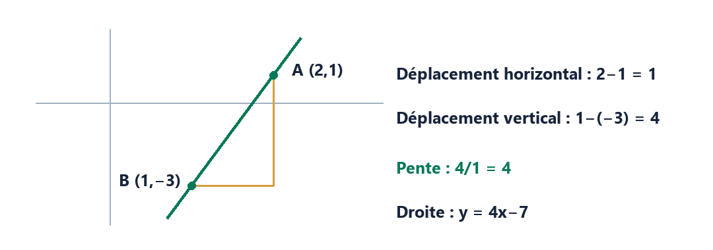

Comprendre le cours
1. Repérer les contraintes d’une fonction
Le domaine contient les valeurs pour lesquelles tous les calculs écrits ont un sens. Un dénominateur doit être non nul, une racine carrée réelle reçoit un nombre positif ou nul et un logarithme reçoit un nombre strictement positif. Résous chaque condition séparément, puis garde leur intersection.
Dans g∘f, applique f avant g. Il faut donc que l’entrée soit dans le domaine de f et que sa sortie soit acceptée par g. Pour inverser une fonction, on peut devoir la restreindre à une branche où chaque image possède un seul antécédent.
2. Passer des coordonnées aux droites
Le vecteur AB se calcule en prenant les coordonnées de B moins celles de A. Sa norme est la racine de la somme des carrés de ses coordonnées. Deux vecteurs sont colinéaires si l’un est un multiple de l’autre, en traitant à part le vecteur nul.
Une droite qui passe par A et a un vecteur directeur u se paramètre par M=A+tu. Si le changement horizontal entre deux points est non nul, la pente est le changement vertical divisé par l’horizontal. Pour une droite verticale, utilise une équation x=constante.

3. Utiliser les produits scalaire et vectoriel
Le produit scalaire de deux vecteurs de coordonnées données additionne les produits coordonnée par coordonnée. Pour deux vecteurs non nuls, il vaut zéro exactement lorsqu’ils sont orthogonaux. Il permet aussi de calculer des projections et des angles.
Dans l’espace, le produit vectoriel de deux directions fournit un vecteur perpendiculaire aux deux. Son signe change quand on inverse les deux facteurs. Pour écrire l’équation d’un plan contenant deux directions non colinéaires, calcule une normale avec ce produit, puis impose que son produit scalaire avec AM vaut zéro.
4. Choisir une méthode de primitivation
Une primitive F vérifie F′=f. Selon l’intervalle, une autre primitive s’obtient en ajoutant une constante. Une intégrale définie compare F(b) à F(a). Le résultat peut être négatif lorsqu’une courbe se trouve sous l’axe.
Avec une composée, cherche une expression et sa dérivée dans le même produit. Par exemple 2x cos(x²) se reconnaît par la dérivée de x². Pour un produit tel que xeˣ, dériver la partie polynomiale simplifie le calcul. C’est le critère qui oriente vers une intégration par parties.
Du cours aux TD et TP
Questions TD & TP
Chapitre 1 · Combiner les contraintes du logarithme et de la racine
Question du support. Déterminer le domaine de ln(3−x)+√(x−1)/(x−2).
- Le logarithme impose
x<3. La racine imposex≥1. Le dénominateur imposex≠2. - Le domaine est
[1,2)∪(2,3). Vérifie pourquoi 1 est permis, pourquoi 2 est exclu et pourquoi 3 ne convient pas.
Chapitre 2 · Trouver la droite passant par A(2,1) et B(1,−3)
Question du support. Donner l’équation cartésienne et la pente de la droite qui passe par A et B.
- De B à A, l’écart horizontal vaut 1 et le vertical vaut 4. La pente vaut 4.
- Écris
y=4x+bet utiliseA(2,1). On a1=8+b, doncb=−7. - Vérifie B, où
4×1−7=−3. La forme cartésienne peut s’écrire4x−y−7=0.
Chapitre 2 · Vérifier une normale aux vecteurs u et v
Question du support. Calculer le produit vectoriel de u=(2,−3,1) par v=(1,−2,0).
- La première coordonnée vaut
(−3)×0−1×(−2)=2. La deuxième vaut1×1−2×0=1. La troisième vaut2×(−2)−(−3)×1=−1. - La normale trouvée est
(2,1,−1). Vérifie que son produit scalaire vaut zéro avec chacun des deux vecteurs.
Chapitre 3 · Trouver une primitive de xeˣ
Question du support. Donner une primitive de xeˣ et expliquer le choix des facteurs.
- Dérive
xpour obtenir 1. Intègreeˣpour obtenireˣ. - En intégration par parties, cela donne
xeˣ−eˣ+C, soit(x−1)eˣ+C. - Dérive le résultat. Tu retrouves
eˣ+(x−1)eˣ=xeˣ.